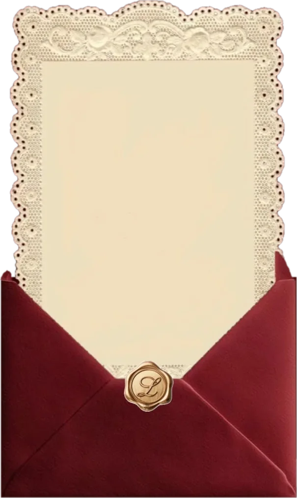
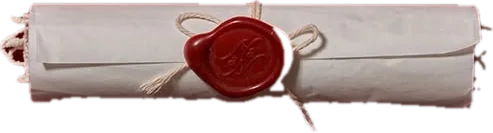

Do Instead
offline, on purpose
put the phone down, love
✦
i.How's your energy?
ii.How much time?
iii.Where are you?
iv.What do you need?
v.Who's around?
✦

press the seal

times you chose this
over scrolling0
over scrolling0